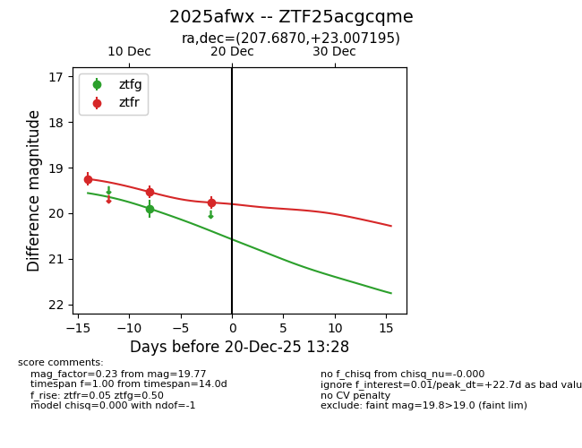
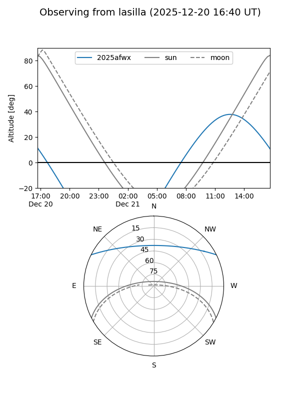
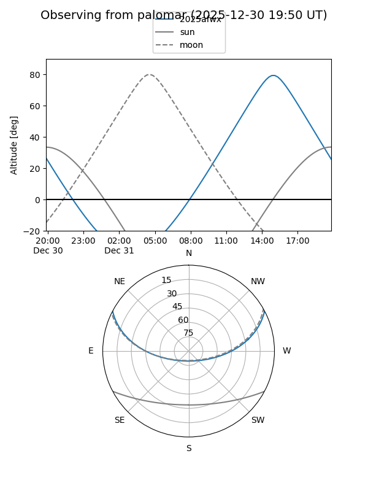
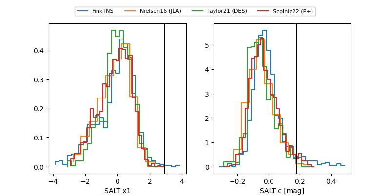

2025afwx
Target 2025afwx at 2025-12-18 15:42
Aliases and brokers:
FINK: fink-portal.org/ZTF25acgcqme
Lasair: lasair-ztf.lsst.ac.uk/objects/ZTF25acgcqme
ALeRCE: alerce.online/object/ZTF25acgcqme
TNS: wis-tns.org/object/2025afwx
YSE: ziggy.ucolick.org/yse/transient_detail/2025afwx
alt names
ZTF25acgcqme (ztf,fink_ztf)
2025afwx (tns,yse)
Coordinates:
equatorial (ra, dec) = 207.6870,+23.00719
equatorial (HMS+DMS) = 13:50:44.89,+23:00:25.90
galactic (l, b) = (19.1250,+75.96213)
Photometry
last ztfg=19.90, ztfr=19.77
1 ztfg, 3 ztfr detections
Lightcurve

Visibility


Additional plots
